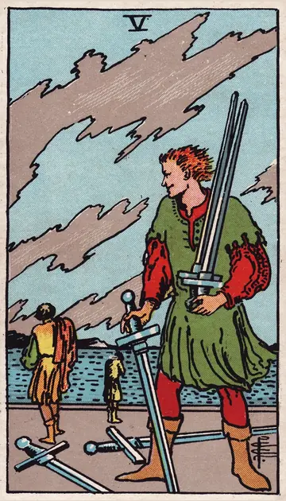

正位置ソードの5の正位置
キーワード：勝ち負け・対立・後味の悪さ
恋愛
意地の張り合いで、関係がこじれやすい時です。
相手の気持ちあなたとの関係で、意地を張っているようです。
この先意地を手放せば、関係を修復できそうです。
アドバイス勝つことより、二人が笑顔でいられることを選びましょう。
気をつけること相手を言い負かして、満足しないように。
この先意地を手放せば、関係を修復できそうです。
アドバイス勝つことより、二人が笑顔でいられることを選びましょう。
気をつけること相手を言い負かして、満足しないように。
人間関係
勝ち負けにこだわり、対立しやすい時です。
相手の気持ちあなたに、負けたくないと感じているようです。
この先対立が落ち着き、本当の味方が見えてきそうです。
アドバイス引くべきところでは、引きましょう。
気をつけること人を利用しないように。
この先対立が落ち着き、本当の味方が見えてきそうです。
アドバイス引くべきところでは、引きましょう。
気をつけること人を利用しないように。
仕事・学業
手段を選ばない競争に、巻き込まれやすい時期です。
この先誠実なやり方が、最後に評価されそうです。
アドバイス正々堂々としたやり方を選びましょう。
気をつけることずるいやり方で、信頼を失わないように。
アドバイス正々堂々としたやり方を選びましょう。
気をつけることずるいやり方で、信頼を失わないように。
お金
お金をめぐって、もめごとが起きやすい時です。
この先冷静に対応すれば、収まりそうです。
アドバイスお金の約束は、記録に残しましょう。
気をつけること損得だけで、人を判断しないように。
アドバイスお金の約束は、記録に残しましょう。
気をつけること損得だけで、人を判断しないように。
生活
暮らしの中で、意地の張り合いが起きやすい時です。
この先引くことで、穏やかな暮らしが戻りそうです。
アドバイス言い争うより、落ち着いて話しましょう。
気をつけること勝ち負けにこだわらないように。
アドバイス言い争うより、落ち着いて話しましょう。
気をつけること勝ち負けにこだわらないように。
今日の運勢
後味の悪い出来事が起きやすい日です。
この先もめごとは、時間とともに収まりそうです。
アドバイス言い争いになりそうなら、その場を離れましょう。
気をつけること意地悪な言葉に、乗らないように。
アドバイス言い争いになりそうなら、その場を離れましょう。
気をつけること意地悪な言葉に、乗らないように。
逆位置ソードの5の逆位置
キーワード：和解・引き際・反省
恋愛
対立が落ち着き、和解に向かえる時です。
相手の気持ちあなたと、仲直りしたいと感じているようです。
この先仲直りして、関係が落ち着きそうです。
アドバイス自分から謝ることも、選択肢に入れてみましょう。
気をつけること負けを認められず、こだわり続けないように。
この先仲直りして、関係が落ち着きそうです。
アドバイス自分から謝ることも、選択肢に入れてみましょう。
気をつけること負けを認められず、こだわり続けないように。
人間関係
争いから、身を引ける時です。
相手の気持ちあなたとの争いを、終わらせたいと感じているようです。
この先平和な関係を取り戻せそうです。
アドバイス過ぎたことは、水に流しましょう。
気をつけること表面だけの和解にならないように。
この先平和な関係を取り戻せそうです。
アドバイス過ぎたことは、水に流しましょう。
気をつけること表面だけの和解にならないように。
仕事・学業
無理な競争から、抜け出せる時期です。
この先自分らしいやり方で、成果が出そうです。
アドバイス自分に合うやり方を、選び直しましょう。
気をつけること同じ争いを繰り返さないように。
アドバイス自分に合うやり方を、選び直しましょう。
気をつけること同じ争いを繰り返さないように。
お金
お金のもめごとが、収まっていく時です。
この先落ち着いて解決できそうです。
アドバイス話し合いで、落としどころを見つけましょう。
気をつけること同じトラブルを繰り返さないように。
アドバイス話し合いで、落としどころを見つけましょう。
気をつけること同じトラブルを繰り返さないように。
生活
もめごとが落ち着き、暮らしが静かになる時です。
この先穏やかな暮らしが戻りそうです。
アドバイス仲直りのきっかけを、自分からつくりましょう。
気をつけること過去の言い争いを、蒸し返さないように。
アドバイス仲直りのきっかけを、自分からつくりましょう。
気をつけること過去の言い争いを、蒸し返さないように。
今日の運勢
気持ちを切り替えられる日です。
この先穏やかな気持ちで過ごせそうです。
アドバイス反省点を一つ見つけて、次に生かしましょう。
気をつけること過去の言い争いを、蒸し返さないように。
アドバイス反省点を一つ見つけて、次に生かしましょう。
気をつけること過去の言い争いを、蒸し返さないように。
このページの文章は、アプリ「ひとやすみタロット」の結果に使っている文章です。アプリでは、あなたの相談や、カードが出た位置（今の状況・これからの流れ・アドバイス）に合わせて、この中から文章を選びます。逆位置の読み方は逆位置のことをご覧ください。
「ソードの5」が出たら、あなたの相談ではどう読む？
アプリでは、質問への答えに合わせて、カードの言葉をあなたの相談に合わせて届けます。
Android 対応・会員登録なし